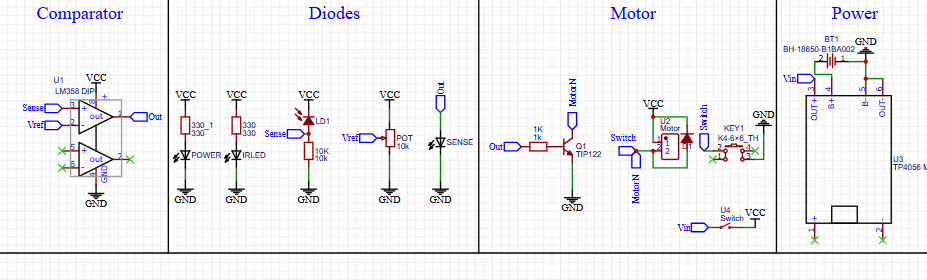
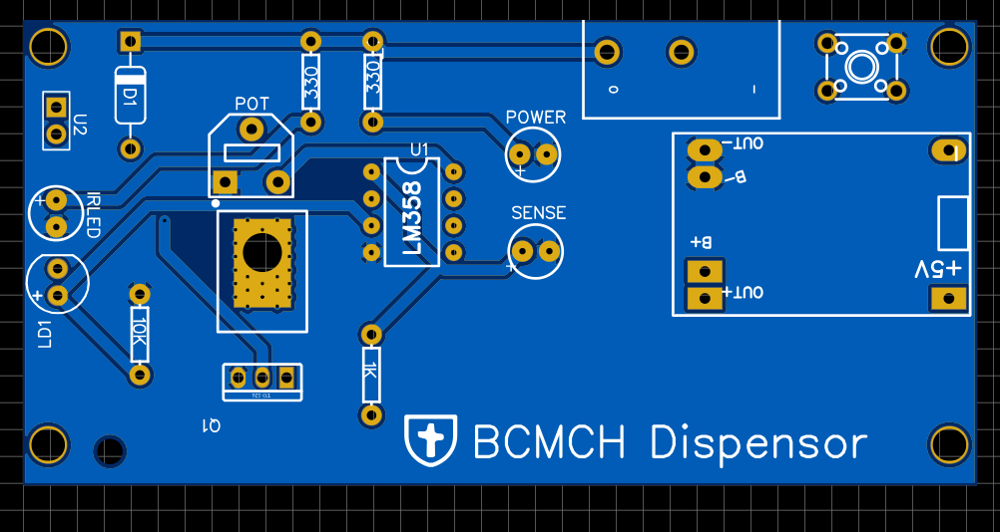

Non-Contact Scrub Dispensing System
IR-based scrub dispensing system with a peristaltic pump, developed during my 2nd-year summer internship at BCMCH Thiruvalla under IEEE EMBS.
Overview
This system enables fully touch-free dispensing of scrub fluid using IR proximity sensing and a peristaltic pump to prevent contamination and clogging. Built with comparator-based analog electronics, a custom PCB, and a 3D-printed enclosure, it was designed for hospital environments and integrates directly with screw-on medical scrub bottles.
Key Features
- IR-based sensing for hygienic hands-free dispensing
- Peristaltic pump prevents backflow & fluid contamination
- No microcontroller required — low-cost analog design
- Custom PCB using comparator-based control
- 3D-printed, wall-mountable enclosure
- Designed for clinical scrub fluid bottles
Schematic
PCB Layout
3D Model

Deployed System